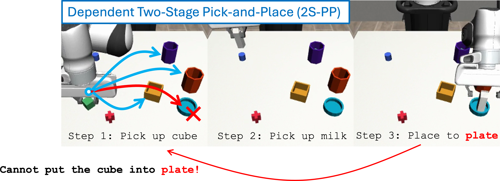

Overview
Robots do not need demonstrations of every instruction combination. A structured quarter of the task space generalizes to the rest, and when one step constrains another, coverage must span those dependencies.
a quarter of the task space
after 1 demo per instruction
a fixed budget across dependencies
Abstract
Generalization Framework
Where does the generalization gap come from? Our analysis separates three sources of distribution shift.
1. Marginal Instruction Shift
Whether individual instruction values have similar coverage and frequency in training and test data.
2. Instruction-Compositional Shift
Whether familiar subtasks are recombined in unfamiliar ways at test time.
3. Context–Action Shift
How observation–action distributions differ even after conditioning on the full instruction sequence.
Experiments
Q1 Sparse Task Coverage
Does the robot need to be trained on every task?
Pick–Place–Press has 4 objects × 4 receptacles × 4 buttons = 64 tasks. We train on B of them and test on the held-out rest.
Pick–Place–Press · 64 tasks · open standalone ↗
The orthogonal 16
Every pair of factor values appears exactly once.
Success rate vs. B
Takeaway: A structured quarter of the task space reaches 78.2% held-out success, matching full training (78.6%).
Every task, one at a time
Open full screen ↗Each cube is one of the 64 tasks. Pick a training set and hover to see per-task success.
Q2 Instruction Finetuning
What is missing when sparse coverage fails?
We pretrain on B tasks, then finetune with one demonstration per instruction, and test on the tasks held out from pretraining.
Pick–Place–Press · 64 tasks · open standalone ↗
OOD success before and after finetuning
Takeaway: Sparse pretraining already learns the skills; one demonstration per instruction steers them to new combinations (0.4% → 54.7%).
Q3 Dependent Instructions
Which combinations must training cover when one step constrains another?
The robot is told where the second object goes (c2); the first object may go anywhere else (c1 ≠ c2).
Dependent two-stage Pick-and-Place · 48 tasks · open standalone ↗
The task: “Put the cube away, then put the milk on the plate.”

Same 16 training tasks, spread over more (o1, c2) combinations
Every condition trains on B = 16 tasks; only the number of covered (o1, c2) combinations changes.
Takeaway: At a fixed budget of 16 tasks, covering more dependent combinations raises held-out success from 9.2% to 31.4%.
Further Findings
Stage-wise modular policy vs. full-instruction policy
Stage-wise modular π(a | z, lσ(z)) A ground-truth stage indicator passes only the active instruction.
Full instruction π(a | z, l) The policy sees every instruction at every stage.
(a) Independent instructions: the active instruction is enough
Pick–Place–Press · OOD success rate (%)
(b) Dependent instructions: the hidden constraint is lost
Two-stage Pick-and-Place · wrong first container (%), lower is better
Takeaway: Stage-wise modularity helps when instructions are independent, but cannot learn a dependency on an instruction it does not see.
Code & Data
The training code, simulator, and demonstration datasets for all three task families are public. Setup, data preparation, and train/evaluate commands are in the code repository README.
Datasets are hosted on Hugging Face. Pretrained checkpoint downloads are not yet available.
Citation
Accepted to the Conference on Robot Learning (CoRL) 2026 as a spotlight presentation. Preprint: arXiv:2607.29687.
@inproceedings{wang2026diagnosing,
title={Diagnosing Compositional Generalization in Sequential Robot Tasks},
author={Yixiao Wang and Cheng-En Wu and Lingfeng Sun and Pengcheng Wang and
Xiang Ji and Boyuan Liang and Guojian Zhan and Masayoshi Tomizuka},
booktitle={Conference on Robot Learning (CoRL)},
year={2026},
note={Spotlight presentation},
url={https://arxiv.org/abs/2607.29687}
}